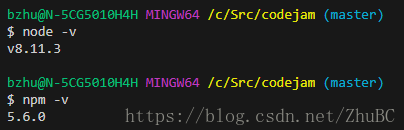

今天被一个 redhat 镜像上的老版本的 node 和 npm 坑了（使用 yum install npm 安装的），npm -v (1.3.6), node -v(v0.10.48)。最新的版本是多少呢：

这两者的版本差的太多了。导致了各种问题，比如：
Cannot read property 'latest' of undefined
网上搜到有些建议需要更新 npm，给出了命令，但是诡异的是使用 npm install npm -g 后，npm 就无法正常使用了，npm -v 都会导致错误，这个原因可能也是 node 的版本确实太低了。
所以安装新版本 npm 后，一切问题都没有了。
可以参考下面的页面，来安装较新版本的 npm: